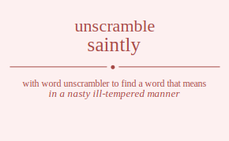

The word found after unscrambling saintly means that in a nasty ill-tempered manner, .

The word found after unscrambling saintly means that in a nasty ill-tempered manner, .
You can also find solutions for different combinations of letters in saintly like saintly saintyl sainlty sainlyt sainytl sainylt saitnly saitnyl saitlny saitlyn saitynl saityln sailnty sailnyt sailtny sailtyn sailynt sailytn saiyntl saiynlt saiytnl saiytln saiylnt saiyltn sanitly sanityl sanilty sanilyt saniytl saniylt santily santiyl santliy santlyi santyil santyli sanlity sanliyt sanltiy sanltyi sanlyit sanlyti sanyitl sanyilt sanytil sanytli sanylit sanylti satinly satinyl satilny satilyn satiynl satiyln satnily satniyl satnliy satnlyi satnyil satnyli satliny satliyn satlniy satlnyi satlyin satlyni satyinl satyiln satynil satynli satylin satylni salinty salinyt salitny salityn saliynt saliytn salnity salniyt salntiy salntyi salnyit salnyti saltiny saltiyn saltniy saltnyi saltyin saltyni salyint salyitn salynit salynti salytin salytni sayintl sayinlt sayitnl sayitln sayilnt sayiltn saynitl saynilt sayntil sayntli saynlit saynlti saytinl saytiln saytnil saytnli saytlin saytlni saylint saylitn saylnit saylnti sayltin sayltni siantly siantyl sianlty sianlyt sianytl sianylt siatnly siatnyl siatlny siatlyn siatynl siatyln sialnty sialnyt sialtny sialtyn sialynt sialytn siayntl siaynlt siaytnl siaytln siaylnt siayltn sinatly sinatyl sinalty sinalyt sinaytl sinaylt sintaly sintayl sintlay sintlya sintyal sintyla sinlaty sinlayt sinltay sinltya sinlyat sinlyta sinyatl sinyalt sinytal sinytla sinylat sinylta sitanly sitanyl sitalny sitalyn sitaynl sitayln sitnaly sitnayl sitnlay sitnlya sitnyal sitnyla sitlany sitlayn sitlnay sitlnya sitlyan sitlyna sityanl sityaln sitynal sitynla sitylan sitylna silanty silanyt silatny silatyn silaynt silaytn silnaty silnayt silntay silntya silnyat silnyta siltany siltayn siltnay siltnya siltyan siltyna silyant silyatn silynat silynta silytan silytna siyantl siyanlt siyatnl siyatln siyalnt siyaltn siynatl siynalt siyntal siyntla siynlat siynlta siytanl siytaln siytnal siytnla siytlan siytlna siylant siylatn siylnat siylnta siyltan siyltna snaitly snaityl snailty snailyt snaiytl snaiylt snatily snatiyl snatliy snatlyi snatyil snatyli snality snaliyt snaltiy snaltyi snalyit snalyti snayitl snayilt snaytil snaytli snaylit snaylti sniatly sniatyl snialty snialyt sniaytl sniaylt snitaly snitayl snitlay snitlya snityal snityla snilaty snilayt sniltay sniltya snilyat snilyta sniyatl sniyalt sniytal sniytla sniylat sniylta sntaily sntaiyl sntaliy sntalyi sntayil sntayli sntialy sntiayl sntilay sntilya sntiyal sntiyla sntlaiy sntlayi sntliay sntliya sntlyai sntlyia sntyail sntyali sntyial sntyila sntylai sntylia snlaity snlaiyt snlatiy snlatyi snlayit snlayti snliaty snliayt snlitay snlitya snliyat snliyta snltaiy snltayi snltiay snltiya snltyai snltyia snlyait snlyati snlyiat snlyita snlytai snlytia snyaitl snyailt snyatil snyatli snyalit snyalti snyiatl snyialt snyital snyitla snyilat snyilta snytail snytali snytial snytila snytlai snytlia snylait snylati snyliat snylita snyltai snyltia stainly stainyl stailny stailyn staiynl staiyln stanily staniyl stanliy stanlyi stanyil stanyli staliny staliyn stalniy stalnyi stalyin stalyni stayinl stayiln staynil staynli staylin staylni stianly stianyl stialny stialyn stiaynl stiayln stinaly stinayl stinlay stinlya stinyal stinyla stilany stilayn stilnay stilnya stilyan stilyna stiyanl stiyaln stiynal stiynla stiylan stiylna stnaily stnaiyl stnaliy stnalyi stnayil stnayli stnialy stniayl stnilay stnilya stniyal stniyla stnlaiy stnlayi stnliay stnliya stnlyai stnlyia stnyail stnyali stnyial stnyila stnylai stnylia stlainy stlaiyn stlaniy stlanyi stlayin stlayni stliany stliayn stlinay stlinya stliyan stliyna stlnaiy stlnayi stlniay stlniya stlnyai stlnyia stlyain stlyani stlyian stlyina stlynai stlynia styainl styailn styanil styanli styalin styalni styianl styialn styinal styinla styilan styilna stynail stynali stynial stynila stynlai stynlia stylain stylani stylian stylina stylnai stylnia slainty slainyt slaitny slaityn slaiynt slaiytn slanity slaniyt slantiy slantyi slanyit slanyti slatiny slatiyn slatniy slatnyi slatyin slatyni slayint slayitn slaynit slaynti slaytin slaytni slianty slianyt sliatny sliatyn sliaynt sliaytn slinaty slinayt slintay slintya slinyat slinyta slitany slitayn slitnay slitnya slityan slityna sliyant sliyatn sliynat sliynta sliytan sliytna slnaity slnaiyt slnatiy slnatyi slnayit slnayti slniaty slniayt slnitay slnitya slniyat slniyta slntaiy slntayi slntiay slntiya slntyai slntyia slnyait slnyati slnyiat slnyita slnytai slnytia sltainy sltaiyn sltaniy sltanyi sltayin sltayni sltiany sltiayn sltinay sltinya sltiyan sltiyna sltnaiy sltnayi sltniay sltniya sltnyai sltnyia sltyain sltyani sltyian sltyina sltynai sltynia slyaint slyaitn slyanit slyanti slyatin slyatni slyiant slyiatn slyinat slyinta slyitan slyitna slynait slynati slyniat slynita slyntai slyntia slytain slytani slytian slytina slytnai slytnia syaintl syainlt syaitnl syaitln syailnt syailtn syanitl syanilt syantil syantli syanlit syanlti syatinl syatiln syatnil syatnli syatlin syatlni syalint syalitn syalnit syalnti syaltin syaltni syiantl syianlt syiatnl syiatln syialnt syialtn syinatl syinalt syintal syintla syinlat syinlta syitanl syitaln syitnal syitnla syitlan syitlna syilant syilatn syilnat syilnta syiltan syiltna synaitl synailt synatil synatli synalit synalti syniatl synialt synital synitla synilat synilta syntail syntali syntial syntila syntlai syntlia synlait synlati synliat synlita synltai synltia sytainl sytailn sytanil sytanli sytalin sytalni sytianl sytialn sytinal sytinla sytilan sytilna sytnail sytnali sytnial sytnila sytnlai sytnlia sytlain sytlani sytlian sytlina sytlnai sytlnia sylaint sylaitn sylanit sylanti sylatin sylatni syliant syliatn sylinat sylinta sylitan sylitna sylnait sylnati sylniat sylnita sylntai sylntia syltain syltani syltian syltina syltnai syltnia asintly asintyl asinlty asinlyt asinytl asinylt asitnly asitnyl asitlny asitlyn asitynl asityln asilnty asilnyt asiltny asiltyn asilynt asilytn asiyntl asiynlt asiytnl asiytln asiylnt asiyltn asnitly asnityl asnilty asnilyt asniytl asniylt asntily asntiyl asntliy asntlyi asntyil asntyli asnlity asnliyt asnltiy asnltyi asnlyit asnlyti asnyitl asnyilt asnytil asnytli asnylit asnylti astinly astinyl astilny astilyn astiynl astiyln astnily astniyl astnliy astnlyi astnyil astnyli astliny astliyn astlniy astlnyi astlyin astlyni astyinl astyiln astynil astynli astylin astylni aslinty aslinyt aslitny aslityn asliynt asliytn aslnity aslniyt aslntiy aslntyi aslnyit aslnyti asltiny asltiyn asltniy asltnyi asltyin asltyni aslyint aslyitn aslynit aslynti aslytin aslytni asyintl asyinlt asyitnl asyitln asyilnt asyiltn asynitl asynilt asyntil asyntli asynlit asynlti asytinl asytiln asytnil asytnli asytlin asytlni asylint asylitn asylnit asylnti asyltin asyltni aisntly aisntyl aisnlty aisnlyt aisnytl aisnylt aistnly aistnyl aistlny aistlyn aistynl aistyln aislnty aislnyt aisltny aisltyn aislynt aislytn aisyntl aisynlt aisytnl aisytln aisylnt aisyltn ainstly ainstyl ainslty ainslyt ainsytl ainsylt aintsly aintsyl aintlsy aintlys aintysl aintyls ainlsty ainlsyt ainltsy ainltys ainlyst ainlyts ainystl ainyslt ainytsl ainytls ainylst ainylts aitsnly aitsnyl aitslny aitslyn aitsynl aitsyln aitnsly aitnsyl aitnlsy aitnlys aitnysl aitnyls aitlsny aitlsyn aitlnsy aitlnys aitlysn aitlyns aitysnl aitysln aitynsl aitynls aitylsn aitylns ailsnty ailsnyt ailstny ailstyn ailsynt ailsytn ailnsty ailnsyt ailntsy ailntys ailnyst ailnyts ailtsny ailtsyn ailtnsy ailtnys ailtysn ailtyns ailysnt ailystn ailynst ailynts ailytsn ailytns aiysntl aiysnlt aiystnl aiystln aiyslnt aiysltn aiynstl aiynslt aiyntsl aiyntls aiynlst aiynlts aiytsnl aiytsln aiytnsl aiytnls aiytlsn aiytlns aiylsnt aiylstn aiylnst aiylnts aiyltsn aiyltns ansitly ansityl ansilty ansilyt ansiytl ansiylt anstily anstiyl anstliy anstlyi anstyil anstyli anslity ansliyt ansltiy ansltyi anslyit anslyti ansyitl ansyilt ansytil ansytli ansylit ansylti anistly anistyl anislty anislyt anisytl anisylt anitsly anitsyl anitlsy anitlys anitysl anityls anilsty anilsyt aniltsy aniltys anilyst anilyts aniystl aniyslt aniytsl aniytls aniylst aniylts antsily antsiyl antsliy antslyi antsyil antsyli antisly antisyl antilsy antilys antiysl antiyls antlsiy antlsyi antlisy antliys antlysi antlyis antysil antysli antyisl antyils antylsi antylis anlsity anlsiyt anlstiy anlstyi anlsyit anlsyti anlisty anlisyt anlitsy anlitys anliyst anliyts anltsiy anltsyi anltisy anltiys anltysi anltyis anlysit anlysti anlyist anlyits anlytsi anlytis anysitl anysilt anystil anystli anyslit anyslti anyistl anyislt anyitsl anyitls anyilst anyilts anytsil anytsli anytisl anytils anytlsi anytlis anylsit anylsti anylist anylits anyltsi anyltis atsinly atsinyl atsilny atsilyn atsiynl atsiyln atsnily atsniyl atsnliy atsnlyi atsnyil atsnyli atsliny atsliyn atslniy atslnyi atslyin atslyni atsyinl atsyiln atsynil atsynli atsylin atsylni atisnly atisnyl atislny atislyn atisynl atisyln atinsly atinsyl atinlsy atinlys atinysl atinyls atilsny atilsyn atilnsy atilnys atilysn atilyns atiysnl atiysln atiynsl atiynls atiylsn atiylns atnsily atnsiyl atnsliy atnslyi atnsyil atnsyli atnisly atnisyl atnilsy atnilys atniysl atniyls atnlsiy atnlsyi atnlisy atnliys atnlysi atnlyis atnysil atnysli atnyisl atnyils atnylsi atnylis atlsiny atlsiyn atlsniy atlsnyi atlsyin atlsyni atlisny atlisyn atlinsy atlinys atliysn atliyns atlnsiy atlnsyi atlnisy atlniys atlnysi atlnyis atlysin atlysni atlyisn atlyins atlynsi atlynis atysinl atysiln atysnil atysnli atyslin atyslni atyisnl atyisln atyinsl atyinls atyilsn atyilns atynsil atynsli atynisl atynils atynlsi atynlis atylsin atylsni atylisn atylins atylnsi atylnis alsinty alsinyt alsitny alsityn alsiynt alsiytn alsnity alsniyt alsntiy alsntyi alsnyit alsnyti alstiny alstiyn alstniy alstnyi alstyin alstyni alsyint alsyitn alsynit alsynti alsytin alsytni alisnty alisnyt alistny alistyn alisynt alisytn alinsty alinsyt alintsy alintys alinyst alinyts alitsny alitsyn alitnsy alitnys alitysn alityns aliysnt aliystn aliynst aliynts aliytsn aliytns alnsity alnsiyt alnstiy alnstyi alnsyit alnsyti alnisty alnisyt alnitsy alnitys alniyst alniyts alntsiy alntsyi alntisy alntiys alntysi alntyis alnysit alnysti alnyist alnyits alnytsi alnytis altsiny altsiyn altsniy altsnyi altsyin altsyni altisny altisyn altinsy altinys altiysn altiyns altnsiy altnsyi altnisy altniys altnysi altnyis altysin altysni altyisn altyins altynsi altynis alysint alysitn alysnit alysnti alystin alystni alyisnt alyistn alyinst alyints alyitsn alyitns alynsit alynsti alynist alynits alyntsi alyntis alytsin alytsni alytisn alytins alytnsi alytnis aysintl aysinlt aysitnl aysitln aysilnt aysiltn aysnitl aysnilt aysntil aysntli aysnlit aysnlti aystinl aystiln aystnil aystnli aystlin aystlni ayslint ayslitn ayslnit ayslnti aysltin aysltni ayisntl ayisnlt ayistnl ayistln ayislnt ayisltn ayinstl ayinslt ayintsl ayintls ayinlst ayinlts ayitsnl ayitsln ayitnsl ayitnls ayitlsn ayitlns ayilsnt ayilstn ayilnst ayilnts ayiltsn ayiltns aynsitl aynsilt aynstil aynstli aynslit aynslti aynistl aynislt aynitsl aynitls aynilst aynilts ayntsil ayntsli ayntisl ayntils ayntlsi ayntlis aynlsit aynlsti aynlist aynlits aynltsi aynltis aytsinl aytsiln aytsnil aytsnli aytslin aytslni aytisnl aytisln aytinsl aytinls aytilsn aytilns aytnsil aytnsli aytnisl aytnils aytnlsi aytnlis aytlsin aytlsni aytlisn aytlins aytlnsi aytlnis aylsint aylsitn aylsnit aylsnti aylstin aylstni aylisnt aylistn aylinst aylints aylitsn aylitns aylnsit aylnsti aylnist aylnits aylntsi aylntis ayltsin ayltsni ayltisn ayltins ayltnsi ayltnis isantly isantyl isanlty isanlyt isanytl isanylt isatnly isatnyl isatlny isatlyn isatynl isatyln isalnty isalnyt isaltny isaltyn isalynt isalytn isayntl isaynlt isaytnl isaytln isaylnt isayltn isnatly isnatyl isnalty isnalyt isnaytl isnaylt isntaly isntayl isntlay isntlya isntyal isntyla isnlaty isnlayt isnltay isnltya isnlyat isnlyta isnyatl isnyalt isnytal isnytla isnylat isnylta istanly istanyl istalny istalyn istaynl istayln istnaly istnayl istnlay istnlya istnyal istnyla istlany istlayn istlnay istlnya istlyan istlyna istyanl istyaln istynal istynla istylan istylna islanty islanyt islatny islatyn islaynt islaytn islnaty islnayt islntay islntya islnyat islnyta isltany isltayn isltnay isltnya isltyan isltyna islyant islyatn islynat islynta islytan islytna isyantl isyanlt isyatnl isyatln isyalnt isyaltn isynatl isynalt isyntal isyntla isynlat isynlta isytanl isytaln isytnal isytnla isytlan isytlna isylant isylatn isylnat isylnta isyltan isyltna iasntly iasntyl iasnlty iasnlyt iasnytl iasnylt iastnly iastnyl iastlny iastlyn iastynl iastyln iaslnty iaslnyt iasltny iasltyn iaslynt iaslytn iasyntl iasynlt iasytnl iasytln iasylnt iasyltn ianstly ianstyl ianslty ianslyt iansytl iansylt iantsly iantsyl iantlsy iantlys iantysl iantyls ianlsty ianlsyt ianltsy ianltys ianlyst ianlyts ianystl ianyslt ianytsl ianytls ianylst ianylts iatsnly iatsnyl iatslny iatslyn iatsynl iatsyln iatnsly iatnsyl iatnlsy iatnlys iatnysl iatnyls iatlsny iatlsyn iatlnsy iatlnys iatlysn iatlyns iatysnl iatysln iatynsl iatynls iatylsn iatylns ialsnty ialsnyt ialstny ialstyn ialsynt ialsytn ialnsty ialnsyt ialntsy ialntys ialnyst ialnyts ialtsny ialtsyn ialtnsy ialtnys ialtysn ialtyns ialysnt ialystn ialynst ialynts ialytsn ialytns iaysntl iaysnlt iaystnl iaystln iayslnt iaysltn iaynstl iaynslt iayntsl iayntls iaynlst iaynlts iaytsnl iaytsln iaytnsl iaytnls iaytlsn iaytlns iaylsnt iaylstn iaylnst iaylnts iayltsn iayltns insatly insatyl insalty insalyt insaytl insaylt instaly instayl instlay instlya instyal instyla inslaty inslayt insltay insltya inslyat inslyta insyatl insyalt insytal insytla insylat insylta inastly inastyl inaslty inaslyt inasytl inasylt inatsly inatsyl inatlsy inatlys inatysl inatyls inalsty inalsyt inaltsy inaltys inalyst inalyts inaystl inayslt inaytsl inaytls inaylst inaylts intsaly intsayl intslay intslya intsyal intsyla intasly intasyl intalsy intalys intaysl intayls intlsay intlsya intlasy intlays intlysa intlyas intysal intysla intyasl intyals intylsa intylas inlsaty inlsayt inlstay inlstya inlsyat inlsyta inlasty inlasyt inlatsy inlatys inlayst inlayts inltsay inltsya inltasy inltays inltysa inltyas inlysat inlysta inlyast inlyats inlytsa inlytas inysatl inysalt inystal inystla inyslat inyslta inyastl inyaslt inyatsl inyatls inyalst inyalts inytsal inytsla inytasl inytals inytlsa inytlas inylsat inylsta inylast inylats inyltsa inyltas itsanly itsanyl itsalny itsalyn itsaynl itsayln itsnaly itsnayl itsnlay itsnlya itsnyal itsnyla itslany itslayn itslnay itslnya itslyan itslyna itsyanl itsyaln itsynal itsynla itsylan itsylna itasnly itasnyl itaslny itaslyn itasynl itasyln itansly itansyl itanlsy itanlys itanysl itanyls italsny italsyn italnsy italnys italysn italyns itaysnl itaysln itaynsl itaynls itaylsn itaylns itnsaly itnsayl itnslay itnslya itnsyal itnsyla itnasly itnasyl itnalsy itnalys itnaysl itnayls itnlsay itnlsya itnlasy itnlays itnlysa itnlyas itnysal itnysla itnyasl itnyals itnylsa itnylas itlsany itlsayn itlsnay itlsnya itlsyan itlsyna itlasny itlasyn itlansy itlanys itlaysn itlayns itlnsay itlnsya itlnasy itlnays itlnysa itlnyas itlysan itlysna itlyasn itlyans itlynsa itlynas itysanl itysaln itysnal itysnla ityslan ityslna ityasnl ityasln ityansl ityanls ityalsn ityalns itynsal itynsla itynasl itynals itynlsa itynlas itylsan itylsna itylasn itylans itylnsa itylnas ilsanty ilsanyt ilsatny ilsatyn ilsaynt ilsaytn ilsnaty ilsnayt ilsntay ilsntya ilsnyat ilsnyta ilstany ilstayn ilstnay ilstnya ilstyan ilstyna ilsyant ilsyatn ilsynat ilsynta ilsytan ilsytna ilasnty ilasnyt ilastny ilastyn ilasynt ilasytn ilansty ilansyt ilantsy ilantys ilanyst ilanyts ilatsny ilatsyn ilatnsy ilatnys ilatysn ilatyns ilaysnt ilaystn ilaynst ilaynts ilaytsn ilaytns ilnsaty ilnsayt ilnstay ilnstya ilnsyat ilnsyta ilnasty ilnasyt ilnatsy ilnatys ilnayst ilnayts ilntsay ilntsya ilntasy ilntays ilntysa ilntyas ilnysat ilnysta ilnyast ilnyats ilnytsa ilnytas iltsany iltsayn iltsnay iltsnya iltsyan iltsyna iltasny iltasyn iltansy iltanys iltaysn iltayns iltnsay iltnsya iltnasy iltnays iltnysa iltnyas iltysan iltysna iltyasn iltyans iltynsa iltynas ilysant ilysatn ilysnat ilysnta ilystan ilystna ilyasnt ilyastn ilyanst ilyants ilyatsn ilyatns ilynsat ilynsta ilynast ilynats ilyntsa ilyntas ilytsan ilytsna ilytasn ilytans ilytnsa ilytnas iysantl iysanlt iysatnl iysatln iysalnt iysaltn iysnatl iysnalt iysntal iysntla iysnlat iysnlta iystanl iystaln iystnal iystnla iystlan iystlna iyslant iyslatn iyslnat iyslnta iysltan iysltna iyasntl iyasnlt iyastnl iyastln iyaslnt iyasltn iyanstl iyanslt iyantsl iyantls iyanlst iyanlts iyatsnl iyatsln iyatnsl iyatnls iyatlsn iyatlns iyalsnt iyalstn iyalnst iyalnts iyaltsn iyaltns iynsatl iynsalt iynstal iynstla iynslat iynslta iynastl iynaslt iynatsl iynatls iynalst iynalts iyntsal iyntsla iyntasl iyntals iyntlsa iyntlas iynlsat iynlsta iynlast iynlats iynltsa iynltas iytsanl iytsaln iytsnal iytsnla iytslan iytslna iytasnl iytasln iytansl iytanls iytalsn iytalns iytnsal iytnsla iytnasl iytnals iytnlsa iytnlas iytlsan iytlsna iytlasn iytlans iytlnsa iytlnas iylsant iylsatn iylsnat iylsnta iylstan iylstna iylasnt iylastn iylanst iylants iylatsn iylatns iylnsat iylnsta iylnast iylnats iylntsa iylntas iyltsan iyltsna iyltasn iyltans iyltnsa iyltnas nsaitly nsaityl nsailty nsailyt nsaiytl nsaiylt nsatily nsatiyl nsatliy nsatlyi nsatyil nsatyli nsality nsaliyt nsaltiy nsaltyi nsalyit nsalyti nsayitl nsayilt nsaytil nsaytli nsaylit nsaylti nsiatly nsiatyl nsialty nsialyt nsiaytl nsiaylt nsitaly nsitayl nsitlay nsitlya nsityal nsityla nsilaty nsilayt nsiltay nsiltya nsilyat nsilyta nsiyatl nsiyalt nsiytal nsiytla nsiylat nsiylta nstaily nstaiyl nstaliy nstalyi nstayil nstayli nstialy nstiayl nstilay nstilya nstiyal nstiyla nstlaiy nstlayi nstliay nstliya nstlyai nstlyia nstyail nstyali nstyial nstyila nstylai nstylia nslaity nslaiyt nslatiy nslatyi nslayit nslayti nsliaty nsliayt nslitay nslitya nsliyat nsliyta nsltaiy nsltayi nsltiay nsltiya nsltyai nsltyia nslyait nslyati nslyiat nslyita nslytai nslytia nsyaitl nsyailt nsyatil nsyatli nsyalit nsyalti nsyiatl nsyialt nsyital nsyitla nsyilat nsyilta nsytail nsytali nsytial nsytila nsytlai nsytlia nsylait nsylati nsyliat nsylita nsyltai nsyltia nasitly nasityl nasilty nasilyt nasiytl nasiylt nastily nastiyl nastliy nastlyi nastyil nastyli naslity nasliyt nasltiy nasltyi naslyit naslyti nasyitl nasyilt nasytil nasytli nasylit nasylti naistly naistyl naislty naislyt naisytl naisylt naitsly naitsyl naitlsy naitlys naitysl naityls nailsty nailsyt nailtsy nailtys nailyst nailyts naiystl naiyslt naiytsl naiytls naiylst naiylts natsily natsiyl natsliy natslyi natsyil natsyli natisly natisyl natilsy natilys natiysl natiyls natlsiy natlsyi natlisy natliys natlysi natlyis natysil natysli natyisl natyils natylsi natylis nalsity nalsiyt nalstiy nalstyi nalsyit nalsyti nalisty nalisyt nalitsy nalitys naliyst naliyts naltsiy naltsyi naltisy naltiys naltysi naltyis nalysit nalysti nalyist nalyits nalytsi nalytis naysitl naysilt naystil naystli nayslit nayslti nayistl nayislt nayitsl nayitls nayilst nayilts naytsil naytsli naytisl naytils naytlsi naytlis naylsit naylsti naylist naylits nayltsi nayltis nisatly nisatyl nisalty nisalyt nisaytl nisaylt nistaly nistayl nistlay nistlya nistyal nistyla nislaty nislayt nisltay nisltya nislyat nislyta nisyatl nisyalt nisytal nisytla nisylat nisylta niastly niastyl niaslty niaslyt niasytl niasylt niatsly niatsyl niatlsy niatlys niatysl niatyls nialsty nialsyt nialtsy nialtys nialyst nialyts niaystl niayslt niaytsl niaytls niaylst niaylts nitsaly nitsayl nitslay nitslya nitsyal nitsyla nitasly nitasyl nitalsy nitalys nitaysl nitayls nitlsay nitlsya nitlasy nitlays nitlysa nitlyas nitysal nitysla nityasl nityals nitylsa nitylas nilsaty nilsayt nilstay nilstya nilsyat nilsyta nilasty nilasyt nilatsy nilatys nilayst nilayts niltsay niltsya niltasy niltays niltysa niltyas nilysat nilysta nilyast nilyats nilytsa nilytas niysatl niysalt niystal niystla niyslat niyslta niyastl niyaslt niyatsl niyatls niyalst niyalts niytsal niytsla niytasl niytals niytlsa niytlas niylsat niylsta niylast niylats niyltsa niyltas ntsaily ntsaiyl ntsaliy ntsalyi ntsayil ntsayli ntsialy ntsiayl ntsilay ntsilya ntsiyal ntsiyla ntslaiy ntslayi ntsliay ntsliya ntslyai ntslyia ntsyail ntsyali ntsyial ntsyila ntsylai ntsylia ntasily ntasiyl ntasliy ntaslyi ntasyil ntasyli ntaisly ntaisyl ntailsy ntailys ntaiysl ntaiyls ntalsiy ntalsyi ntalisy ntaliys ntalysi ntalyis ntaysil ntaysli ntayisl ntayils ntaylsi ntaylis ntisaly ntisayl ntislay ntislya ntisyal ntisyla ntiasly ntiasyl ntialsy ntialys ntiaysl ntiayls ntilsay ntilsya ntilasy ntilays ntilysa ntilyas ntiysal ntiysla ntiyasl ntiyals ntiylsa ntiylas ntlsaiy ntlsayi ntlsiay ntlsiya ntlsyai ntlsyia ntlasiy ntlasyi ntlaisy ntlaiys ntlaysi ntlayis ntlisay ntlisya ntliasy ntliays ntliysa ntliyas ntlysai ntlysia ntlyasi ntlyais ntlyisa ntlyias ntysail ntysali ntysial ntysila ntyslai ntyslia ntyasil ntyasli ntyaisl ntyails ntyalsi ntyalis ntyisal ntyisla ntyiasl ntyials ntyilsa ntyilas ntylsai ntylsia ntylasi ntylais ntylisa ntylias nlsaity nlsaiyt nlsatiy nlsatyi nlsayit nlsayti nlsiaty nlsiayt nlsitay nlsitya nlsiyat nlsiyta nlstaiy nlstayi nlstiay nlstiya nlstyai nlstyia nlsyait nlsyati nlsyiat nlsyita nlsytai nlsytia nlasity nlasiyt nlastiy nlastyi nlasyit nlasyti nlaisty nlaisyt nlaitsy nlaitys nlaiyst nlaiyts nlatsiy nlatsyi nlatisy nlatiys nlatysi nlatyis nlaysit nlaysti nlayist nlayits nlaytsi nlaytis nlisaty nlisayt nlistay nlistya nlisyat nlisyta nliasty nliasyt nliatsy nliatys nliayst nliayts nlitsay nlitsya nlitasy nlitays nlitysa nlityas nliysat nliysta nliyast nliyats nliytsa nliytas nltsaiy nltsayi nltsiay nltsiya nltsyai nltsyia nltasiy nltasyi nltaisy nltaiys nltaysi nltayis nltisay nltisya nltiasy nltiays nltiysa nltiyas nltysai nltysia nltyasi nltyais nltyisa nltyias nlysait nlysati nlysiat nlysita nlystai nlystia nlyasit nlyasti nlyaist nlyaits nlyatsi nlyatis nlyisat nlyista nlyiast nlyiats nlyitsa nlyitas nlytsai nlytsia nlytasi nlytais nlytisa nlytias nysaitl nysailt nysatil nysatli nysalit nysalti nysiatl nysialt nysital nysitla nysilat nysilta nystail nystali nystial nystila nystlai nystlia nyslait nyslati nysliat nyslita nysltai nysltia nyasitl nyasilt nyastil nyastli nyaslit nyaslti nyaistl nyaislt nyaitsl nyaitls nyailst nyailts nyatsil nyatsli nyatisl nyatils nyatlsi nyatlis nyalsit nyalsti nyalist nyalits nyaltsi nyaltis nyisatl nyisalt nyistal nyistla nyislat nyislta nyiastl nyiaslt nyiatsl nyiatls nyialst nyialts nyitsal nyitsla nyitasl nyitals nyitlsa nyitlas nyilsat nyilsta nyilast nyilats nyiltsa nyiltas nytsail nytsali nytsial nytsila nytslai nytslia nytasil nytasli nytaisl nytails nytalsi nytalis nytisal nytisla nytiasl nytials nytilsa nytilas nytlsai nytlsia nytlasi nytlais nytlisa nytlias nylsait nylsati nylsiat nylsita nylstai nylstia nylasit nylasti nylaist nylaits nylatsi nylatis nylisat nylista nyliast nyliats nylitsa nylitas nyltsai nyltsia nyltasi nyltais nyltisa nyltias tsainly tsainyl tsailny tsailyn tsaiynl tsaiyln tsanily tsaniyl tsanliy tsanlyi tsanyil tsanyli tsaliny tsaliyn tsalniy tsalnyi tsalyin tsalyni tsayinl tsayiln tsaynil tsaynli tsaylin tsaylni tsianly tsianyl tsialny tsialyn tsiaynl tsiayln tsinaly tsinayl tsinlay tsinlya tsinyal tsinyla tsilany tsilayn tsilnay tsilnya tsilyan tsilyna tsiyanl tsiyaln tsiynal tsiynla tsiylan tsiylna tsnaily tsnaiyl tsnaliy tsnalyi tsnayil tsnayli tsnialy tsniayl tsnilay tsnilya tsniyal tsniyla tsnlaiy tsnlayi tsnliay tsnliya tsnlyai tsnlyia tsnyail tsnyali tsnyial tsnyila tsnylai tsnylia tslainy tslaiyn tslaniy tslanyi tslayin tslayni tsliany tsliayn tslinay tslinya tsliyan tsliyna tslnaiy tslnayi tslniay tslniya tslnyai tslnyia tslyain tslyani tslyian tslyina tslynai tslynia tsyainl tsyailn tsyanil tsyanli tsyalin tsyalni tsyianl tsyialn tsyinal tsyinla tsyilan tsyilna tsynail tsynali tsynial tsynila tsynlai tsynlia tsylain tsylani tsylian tsylina tsylnai tsylnia tasinly tasinyl tasilny tasilyn tasiynl tasiyln tasnily tasniyl tasnliy tasnlyi tasnyil tasnyli tasliny tasliyn taslniy taslnyi taslyin taslyni tasyinl tasyiln tasynil tasynli tasylin tasylni taisnly taisnyl taislny taislyn taisynl taisyln tainsly tainsyl tainlsy tainlys tainysl tainyls tailsny tailsyn tailnsy tailnys tailysn tailyns taiysnl taiysln taiynsl taiynls taiylsn taiylns tansily tansiyl tansliy tanslyi tansyil tansyli tanisly tanisyl tanilsy tanilys taniysl taniyls tanlsiy tanlsyi tanlisy tanliys tanlysi tanlyis tanysil tanysli tanyisl tanyils tanylsi tanylis talsiny talsiyn talsniy talsnyi talsyin talsyni talisny talisyn talinsy talinys taliysn taliyns talnsiy talnsyi talnisy talniys talnysi talnyis talysin talysni talyisn talyins talynsi talynis taysinl taysiln taysnil taysnli tayslin tayslni tayisnl tayisln tayinsl tayinls tayilsn tayilns taynsil taynsli taynisl taynils taynlsi taynlis taylsin taylsni taylisn taylins taylnsi taylnis tisanly tisanyl tisalny tisalyn tisaynl tisayln tisnaly tisnayl tisnlay tisnlya tisnyal tisnyla tislany tislayn tislnay tislnya tislyan tislyna tisyanl tisyaln tisynal tisynla tisylan tisylna tiasnly tiasnyl tiaslny tiaslyn tiasynl tiasyln tiansly tiansyl tianlsy tianlys tianysl tianyls tialsny tialsyn tialnsy tialnys tialysn tialyns tiaysnl tiaysln tiaynsl tiaynls tiaylsn tiaylns tinsaly tinsayl tinslay tinslya tinsyal tinsyla tinasly tinasyl tinalsy tinalys tinaysl tinayls tinlsay tinlsya tinlasy tinlays tinlysa tinlyas tinysal tinysla tinyasl tinyals tinylsa tinylas tilsany tilsayn tilsnay tilsnya tilsyan tilsyna tilasny tilasyn tilansy tilanys tilaysn tilayns tilnsay tilnsya tilnasy tilnays tilnysa tilnyas tilysan tilysna tilyasn tilyans tilynsa tilynas tiysanl tiysaln tiysnal tiysnla tiyslan tiyslna tiyasnl tiyasln tiyansl tiyanls tiyalsn tiyalns tiynsal tiynsla tiynasl tiynals tiynlsa tiynlas tiylsan tiylsna tiylasn tiylans tiylnsa tiylnas tnsaily tnsaiyl tnsaliy tnsalyi tnsayil tnsayli tnsialy tnsiayl tnsilay tnsilya tnsiyal tnsiyla tnslaiy tnslayi tnsliay tnsliya tnslyai tnslyia tnsyail tnsyali tnsyial tnsyila tnsylai tnsylia tnasily tnasiyl tnasliy tnaslyi tnasyil tnasyli tnaisly tnaisyl tnailsy tnailys tnaiysl tnaiyls tnalsiy tnalsyi tnalisy tnaliys tnalysi tnalyis tnaysil tnaysli tnayisl tnayils tnaylsi tnaylis tnisaly tnisayl tnislay tnislya tnisyal tnisyla tniasly tniasyl tnialsy tnialys tniaysl tniayls tnilsay tnilsya tnilasy tnilays tnilysa tnilyas tniysal tniysla tniyasl tniyals tniylsa tniylas tnlsaiy tnlsayi tnlsiay tnlsiya tnlsyai tnlsyia tnlasiy tnlasyi tnlaisy tnlaiys tnlaysi tnlayis tnlisay tnlisya tnliasy tnliays tnliysa tnliyas tnlysai tnlysia tnlyasi tnlyais tnlyisa tnlyias tnysail tnysali tnysial tnysila tnyslai tnyslia tnyasil tnyasli tnyaisl tnyails tnyalsi tnyalis tnyisal tnyisla tnyiasl tnyials tnyilsa tnyilas tnylsai tnylsia tnylasi tnylais tnylisa tnylias tlsainy tlsaiyn tlsaniy tlsanyi tlsayin tlsayni tlsiany tlsiayn tlsinay tlsinya tlsiyan tlsiyna tlsnaiy tlsnayi tlsniay tlsniya tlsnyai tlsnyia tlsyain tlsyani tlsyian tlsyina tlsynai tlsynia tlasiny tlasiyn tlasniy tlasnyi tlasyin tlasyni tlaisny tlaisyn tlainsy tlainys tlaiysn tlaiyns tlansiy tlansyi tlanisy tlaniys tlanysi tlanyis tlaysin tlaysni tlayisn tlayins tlaynsi tlaynis tlisany tlisayn tlisnay tlisnya tlisyan tlisyna tliasny tliasyn tliansy tlianys tliaysn tliayns tlinsay tlinsya tlinasy tlinays tlinysa tlinyas tliysan tliysna tliyasn tliyans tliynsa tliynas tlnsaiy tlnsayi tlnsiay tlnsiya tlnsyai tlnsyia tlnasiy tlnasyi tlnaisy tlnaiys tlnaysi tlnayis tlnisay tlnisya tlniasy tlniays tlniysa tlniyas tlnysai tlnysia tlnyasi tlnyais tlnyisa tlnyias tlysain tlysani tlysian tlysina tlysnai tlysnia tlyasin tlyasni tlyaisn tlyains tlyansi tlyanis tlyisan tlyisna tlyiasn tlyians tlyinsa tlyinas tlynsai tlynsia tlynasi tlynais tlynisa tlynias tysainl tysailn tysanil tysanli tysalin tysalni tysianl tysialn tysinal tysinla tysilan tysilna tysnail tysnali tysnial tysnila tysnlai tysnlia tyslain tyslani tyslian tyslina tyslnai tyslnia tyasinl tyasiln tyasnil tyasnli tyaslin tyaslni tyaisnl tyaisln tyainsl tyainls tyailsn tyailns tyansil tyansli tyanisl tyanils tyanlsi tyanlis tyalsin tyalsni tyalisn tyalins tyalnsi tyalnis tyisanl tyisaln tyisnal tyisnla tyislan tyislna tyiasnl tyiasln tyiansl tyianls tyialsn tyialns tyinsal tyinsla tyinasl tyinals tyinlsa tyinlas tyilsan tyilsna tyilasn tyilans tyilnsa tyilnas tynsail tynsali tynsial tynsila tynslai tynslia tynasil tynasli tynaisl tynails tynalsi tynalis tynisal tynisla tyniasl tynials tynilsa tynilas tynlsai tynlsia tynlasi tynlais tynlisa tynlias tylsain tylsani tylsian tylsina tylsnai tylsnia tylasin tylasni tylaisn tylains tylansi tylanis tylisan tylisna tyliasn tylians tylinsa tylinas tylnsai tylnsia tylnasi tylnais tylnisa tylnias lsainty lsainyt lsaitny lsaityn lsaiynt lsaiytn lsanity lsaniyt lsantiy lsantyi lsanyit lsanyti lsatiny lsatiyn lsatniy lsatnyi lsatyin lsatyni lsayint lsayitn lsaynit lsaynti lsaytin lsaytni lsianty lsianyt lsiatny lsiatyn lsiaynt lsiaytn lsinaty lsinayt lsintay lsintya lsinyat lsinyta lsitany lsitayn lsitnay lsitnya lsityan lsityna lsiyant lsiyatn lsiynat lsiynta lsiytan lsiytna lsnaity lsnaiyt lsnatiy lsnatyi lsnayit lsnayti lsniaty lsniayt lsnitay lsnitya lsniyat lsniyta lsntaiy lsntayi lsntiay lsntiya lsntyai lsntyia lsnyait lsnyati lsnyiat lsnyita lsnytai lsnytia lstainy lstaiyn lstaniy lstanyi lstayin lstayni lstiany lstiayn lstinay lstinya lstiyan lstiyna lstnaiy lstnayi lstniay lstniya lstnyai lstnyia lstyain lstyani lstyian lstyina lstynai lstynia lsyaint lsyaitn lsyanit lsyanti lsyatin lsyatni lsyiant lsyiatn lsyinat lsyinta lsyitan lsyitna lsynait lsynati lsyniat lsynita lsyntai lsyntia lsytain lsytani lsytian lsytina lsytnai lsytnia lasinty lasinyt lasitny lasityn lasiynt lasiytn lasnity lasniyt lasntiy lasntyi lasnyit lasnyti lastiny lastiyn lastniy lastnyi lastyin lastyni lasyint lasyitn lasynit lasynti lasytin lasytni laisnty laisnyt laistny laistyn laisynt laisytn lainsty lainsyt laintsy laintys lainyst lainyts laitsny laitsyn laitnsy laitnys laitysn laityns laiysnt laiystn laiynst laiynts laiytsn laiytns lansity lansiyt lanstiy lanstyi lansyit lansyti lanisty lanisyt lanitsy lanitys laniyst laniyts lantsiy lantsyi lantisy lantiys lantysi lantyis lanysit lanysti lanyist lanyits lanytsi lanytis latsiny latsiyn latsniy latsnyi latsyin latsyni latisny latisyn latinsy latinys latiysn latiyns latnsiy latnsyi latnisy latniys latnysi latnyis latysin latysni latyisn latyins latynsi latynis laysint laysitn laysnit laysnti laystin laystni layisnt layistn layinst layints layitsn layitns laynsit laynsti laynist laynits layntsi layntis laytsin laytsni laytisn laytins laytnsi laytnis lisanty lisanyt lisatny lisatyn lisaynt lisaytn lisnaty lisnayt lisntay lisntya lisnyat lisnyta listany listayn listnay listnya listyan listyna lisyant lisyatn lisynat lisynta lisytan lisytna liasnty liasnyt liastny liastyn liasynt liasytn liansty liansyt liantsy liantys lianyst lianyts liatsny liatsyn liatnsy liatnys liatysn liatyns liaysnt liaystn liaynst liaynts liaytsn liaytns linsaty linsayt linstay linstya linsyat linsyta linasty linasyt linatsy linatys linayst linayts lintsay lintsya lintasy lintays lintysa lintyas linysat linysta linyast linyats linytsa linytas litsany litsayn litsnay litsnya litsyan litsyna litasny litasyn litansy litanys litaysn litayns litnsay litnsya litnasy litnays litnysa litnyas litysan litysna lityasn lityans litynsa litynas liysant liysatn liysnat liysnta liystan liystna liyasnt liyastn liyanst liyants liyatsn liyatns liynsat liynsta liynast liynats liyntsa liyntas liytsan liytsna liytasn liytans liytnsa liytnas lnsaity lnsaiyt lnsatiy lnsatyi lnsayit lnsayti lnsiaty lnsiayt lnsitay lnsitya lnsiyat lnsiyta lnstaiy lnstayi lnstiay lnstiya lnstyai lnstyia lnsyait lnsyati lnsyiat lnsyita lnsytai lnsytia lnasity lnasiyt lnastiy lnastyi lnasyit lnasyti lnaisty lnaisyt lnaitsy lnaitys lnaiyst lnaiyts lnatsiy lnatsyi lnatisy lnatiys lnatysi lnatyis lnaysit lnaysti lnayist lnayits lnaytsi lnaytis lnisaty lnisayt lnistay lnistya lnisyat lnisyta lniasty lniasyt lniatsy lniatys lniayst lniayts lnitsay lnitsya lnitasy lnitays lnitysa lnityas lniysat lniysta lniyast lniyats lniytsa lniytas lntsaiy lntsayi lntsiay lntsiya lntsyai lntsyia lntasiy lntasyi lntaisy lntaiys lntaysi lntayis lntisay lntisya lntiasy lntiays lntiysa lntiyas lntysai lntysia lntyasi lntyais lntyisa lntyias lnysait lnysati lnysiat lnysita lnystai lnystia lnyasit lnyasti lnyaist lnyaits lnyatsi lnyatis lnyisat lnyista lnyiast lnyiats lnyitsa lnyitas lnytsai lnytsia lnytasi lnytais lnytisa lnytias ltsainy ltsaiyn ltsaniy ltsanyi ltsayin ltsayni ltsiany ltsiayn ltsinay ltsinya ltsiyan ltsiyna ltsnaiy ltsnayi ltsniay ltsniya ltsnyai ltsnyia ltsyain ltsyani ltsyian ltsyina ltsynai ltsynia ltasiny ltasiyn ltasniy ltasnyi ltasyin ltasyni ltaisny ltaisyn ltainsy ltainys ltaiysn ltaiyns ltansiy ltansyi ltanisy ltaniys ltanysi ltanyis ltaysin ltaysni ltayisn ltayins ltaynsi ltaynis ltisany ltisayn ltisnay ltisnya ltisyan ltisyna ltiasny ltiasyn ltiansy ltianys ltiaysn ltiayns ltinsay ltinsya ltinasy ltinays ltinysa ltinyas ltiysan ltiysna ltiyasn ltiyans ltiynsa ltiynas ltnsaiy ltnsayi ltnsiay ltnsiya ltnsyai ltnsyia ltnasiy ltnasyi ltnaisy ltnaiys ltnaysi ltnayis ltnisay ltnisya ltniasy ltniays ltniysa ltniyas ltnysai ltnysia ltnyasi ltnyais ltnyisa ltnyias ltysain ltysani ltysian ltysina ltysnai ltysnia ltyasin ltyasni ltyaisn ltyains ltyansi ltyanis ltyisan ltyisna ltyiasn ltyians ltyinsa ltyinas ltynsai ltynsia ltynasi ltynais ltynisa ltynias lysaint lysaitn lysanit lysanti lysatin lysatni lysiant lysiatn lysinat lysinta lysitan lysitna lysnait lysnati lysniat lysnita lysntai lysntia lystain lystani lystian lystina lystnai lystnia lyasint lyasitn lyasnit lyasnti lyastin lyastni lyaisnt lyaistn lyainst lyaints lyaitsn lyaitns lyansit lyansti lyanist lyanits lyantsi lyantis lyatsin lyatsni lyatisn lyatins lyatnsi lyatnis lyisant lyisatn lyisnat lyisnta lyistan lyistna lyiasnt lyiastn lyianst lyiants lyiatsn lyiatns lyinsat lyinsta lyinast lyinats lyintsa lyintas lyitsan lyitsna lyitasn lyitans lyitnsa lyitnas lynsait lynsati lynsiat lynsita lynstai lynstia lynasit lynasti lynaist lynaits lynatsi lynatis lynisat lynista lyniast lyniats lynitsa lynitas lyntsai lyntsia lyntasi lyntais lyntisa lyntias lytsain lytsani lytsian lytsina lytsnai lytsnia lytasin lytasni lytaisn lytains lytansi lytanis lytisan lytisna lytiasn lytians lytinsa lytinas lytnsai lytnsia lytnasi lytnais lytnisa lytnias ysaintl ysainlt ysaitnl ysaitln ysailnt ysailtn ysanitl ysanilt ysantil ysantli ysanlit ysanlti ysatinl ysatiln ysatnil ysatnli ysatlin ysatlni ysalint ysalitn ysalnit ysalnti ysaltin ysaltni ysiantl ysianlt ysiatnl ysiatln ysialnt ysialtn ysinatl ysinalt ysintal ysintla ysinlat ysinlta ysitanl ysitaln ysitnal ysitnla ysitlan ysitlna ysilant ysilatn ysilnat ysilnta ysiltan ysiltna ysnaitl ysnailt ysnatil ysnatli ysnalit ysnalti ysniatl ysnialt ysnital ysnitla ysnilat ysnilta ysntail ysntali ysntial ysntila ysntlai ysntlia ysnlait ysnlati ysnliat ysnlita ysnltai ysnltia ystainl ystailn ystanil ystanli ystalin ystalni ystianl ystialn ystinal ystinla ystilan ystilna ystnail ystnali ystnial ystnila ystnlai ystnlia ystlain ystlani ystlian ystlina ystlnai ystlnia yslaint yslaitn yslanit yslanti yslatin yslatni ysliant ysliatn yslinat yslinta yslitan yslitna yslnait yslnati yslniat yslnita yslntai yslntia ysltain ysltani ysltian ysltina ysltnai ysltnia yasintl yasinlt yasitnl yasitln yasilnt yasiltn yasnitl yasnilt yasntil yasntli yasnlit yasnlti yastinl yastiln yastnil yastnli yastlin yastlni yaslint yaslitn yaslnit yaslnti yasltin yasltni yaisntl yaisnlt yaistnl yaistln yaislnt yaisltn yainstl yainslt yaintsl yaintls yainlst yainlts yaitsnl yaitsln yaitnsl yaitnls yaitlsn yaitlns yailsnt yailstn yailnst yailnts yailtsn yailtns yansitl yansilt yanstil yanstli yanslit yanslti yanistl yanislt yanitsl yanitls yanilst yanilts yantsil yantsli yantisl yantils yantlsi yantlis yanlsit yanlsti yanlist yanlits yanltsi yanltis yatsinl yatsiln yatsnil yatsnli yatslin yatslni yatisnl yatisln yatinsl yatinls yatilsn yatilns yatnsil yatnsli yatnisl yatnils yatnlsi yatnlis yatlsin yatlsni yatlisn yatlins yatlnsi yatlnis yalsint yalsitn yalsnit yalsnti yalstin yalstni yalisnt yalistn yalinst yalints yalitsn yalitns yalnsit yalnsti yalnist yalnits yalntsi yalntis yaltsin yaltsni yaltisn yaltins yaltnsi yaltnis yisantl yisanlt yisatnl yisatln yisalnt yisaltn yisnatl yisnalt yisntal yisntla yisnlat yisnlta yistanl yistaln yistnal yistnla yistlan yistlna yislant yislatn yislnat yislnta yisltan yisltna yiasntl yiasnlt yiastnl yiastln yiaslnt yiasltn yianstl yianslt yiantsl yiantls yianlst yianlts yiatsnl yiatsln yiatnsl yiatnls yiatlsn yiatlns yialsnt yialstn yialnst yialnts yialtsn yialtns yinsatl yinsalt yinstal yinstla yinslat yinslta yinastl yinaslt yinatsl yinatls yinalst yinalts yintsal yintsla yintasl yintals yintlsa yintlas yinlsat yinlsta yinlast yinlats yinltsa yinltas yitsanl yitsaln yitsnal yitsnla yitslan yitslna yitasnl yitasln yitansl yitanls yitalsn yitalns yitnsal yitnsla yitnasl yitnals yitnlsa yitnlas yitlsan yitlsna yitlasn yitlans yitlnsa yitlnas yilsant yilsatn yilsnat yilsnta yilstan yilstna yilasnt yilastn yilanst yilants yilatsn yilatns yilnsat yilnsta yilnast yilnats yilntsa yilntas yiltsan yiltsna yiltasn yiltans yiltnsa yiltnas ynsaitl ynsailt ynsatil ynsatli ynsalit ynsalti ynsiatl ynsialt ynsital ynsitla ynsilat ynsilta ynstail ynstali ynstial ynstila ynstlai ynstlia ynslait ynslati ynsliat ynslita ynsltai ynsltia ynasitl ynasilt ynastil ynastli ynaslit ynaslti ynaistl ynaislt ynaitsl ynaitls ynailst ynailts ynatsil ynatsli ynatisl ynatils ynatlsi ynatlis ynalsit ynalsti ynalist ynalits ynaltsi ynaltis ynisatl ynisalt ynistal ynistla ynislat ynislta yniastl yniaslt yniatsl yniatls ynialst ynialts ynitsal ynitsla ynitasl ynitals ynitlsa ynitlas ynilsat ynilsta ynilast ynilats yniltsa yniltas yntsail yntsali yntsial yntsila yntslai yntslia yntasil yntasli yntaisl yntails yntalsi yntalis yntisal yntisla yntiasl yntials yntilsa yntilas yntlsai yntlsia yntlasi yntlais yntlisa yntlias ynlsait ynlsati ynlsiat ynlsita ynlstai ynlstia ynlasit ynlasti ynlaist ynlaits ynlatsi ynlatis ynlisat ynlista ynliast ynliats ynlitsa ynlitas ynltsai ynltsia ynltasi ynltais ynltisa ynltias ytsainl ytsailn ytsanil ytsanli ytsalin ytsalni ytsianl ytsialn ytsinal ytsinla ytsilan ytsilna ytsnail ytsnali ytsnial ytsnila ytsnlai ytsnlia ytslain ytslani ytslian ytslina ytslnai ytslnia ytasinl ytasiln ytasnil ytasnli ytaslin ytaslni ytaisnl ytaisln ytainsl ytainls ytailsn ytailns ytansil ytansli ytanisl ytanils ytanlsi ytanlis ytalsin ytalsni ytalisn ytalins ytalnsi ytalnis ytisanl ytisaln ytisnal ytisnla ytislan ytislna ytiasnl ytiasln ytiansl ytianls ytialsn ytialns ytinsal ytinsla ytinasl ytinals ytinlsa ytinlas ytilsan ytilsna ytilasn ytilans ytilnsa ytilnas ytnsail ytnsali ytnsial ytnsila ytnslai ytnslia ytnasil ytnasli ytnaisl ytnails ytnalsi ytnalis ytnisal ytnisla ytniasl ytnials ytnilsa ytnilas ytnlsai ytnlsia ytnlasi ytnlais ytnlisa ytnlias ytlsain ytlsani ytlsian ytlsina ytlsnai ytlsnia ytlasin ytlasni ytlaisn ytlains ytlansi ytlanis ytlisan ytlisna ytliasn ytlians ytlinsa ytlinas ytlnsai ytlnsia ytlnasi ytlnais ytlnisa ytlnias ylsaint ylsaitn ylsanit ylsanti ylsatin ylsatni ylsiant ylsiatn ylsinat ylsinta ylsitan ylsitna ylsnait ylsnati ylsniat ylsnita ylsntai ylsntia ylstain ylstani ylstian ylstina ylstnai ylstnia ylasint ylasitn ylasnit ylasnti ylastin ylastni ylaisnt ylaistn ylainst ylaints ylaitsn ylaitns ylansit ylansti ylanist ylanits ylantsi ylantis ylatsin ylatsni ylatisn ylatins ylatnsi ylatnis ylisant ylisatn ylisnat ylisnta ylistan ylistna yliasnt yliastn ylianst yliants yliatsn yliatns ylinsat ylinsta ylinast ylinats ylintsa ylintas ylitsan ylitsna ylitasn ylitans ylitnsa ylitnas ylnsait ylnsati ylnsiat ylnsita ylnstai ylnstia ylnasit ylnasti ylnaist ylnaits ylnatsi ylnatis ylnisat ylnista ylniast ylniats ylnitsa ylnitas ylntsai ylntsia ylntasi ylntais ylntisa ylntias yltsain yltsani yltsian yltsina yltsnai yltsnia yltasin yltasni yltaisn yltains yltansi yltanis yltisan yltisna yltiasn yltians yltinsa yltinas yltnsai yltnsia yltnasi yltnais yltnisa yltnias.
Unscramble Words is registered trademark.